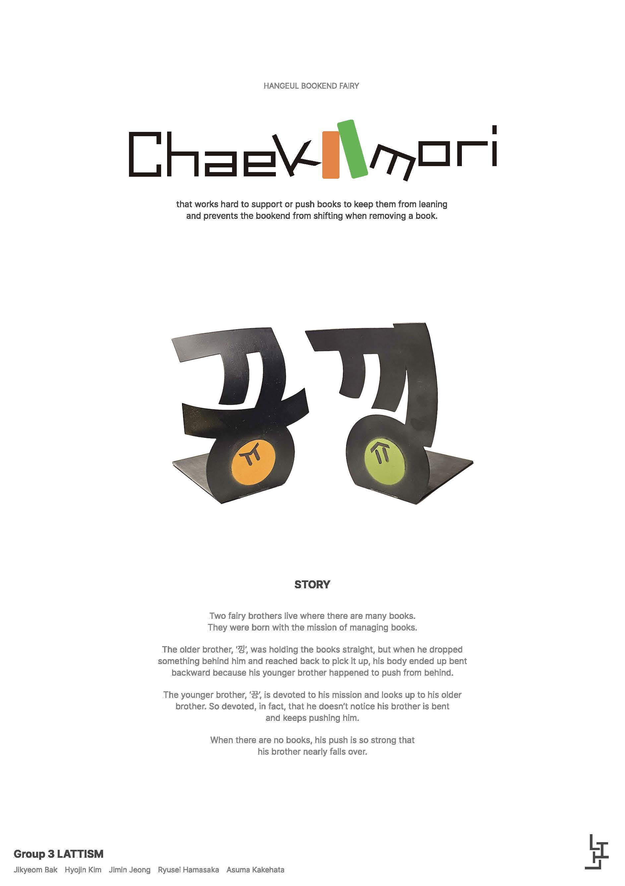

Chaekmori
Group3 LATTISM
This is a story about a mysterious book stand.
It is a creature that often lives between doors and walls.
Long ago, it had a friend buried inside a wall, which led it to develop a habit of protecting walls.
The owner of the house where it lives often closes the door too hard, damaging the wall, so it decided to protect the wall from the door.
Since then, it has been stuck between the door and the wall, screaming every time the door opens and hits the wall.
Even though its friend buried in the wall is just a figment of its imagination...
It is a creature that often lives between doors and walls. Long ago, it had a friend buried inside a wall, which led it to develop a habit of protecting walls.
The owner of the house where it lives often closes the door too hard, damaging the wall, so it decided to protect the wall from the door.
Since then, it has been stuck between the door and the wall, screaming every time the door opens and hits the wall.
Even though its friend buried in the wall is just a figment of its imagination...